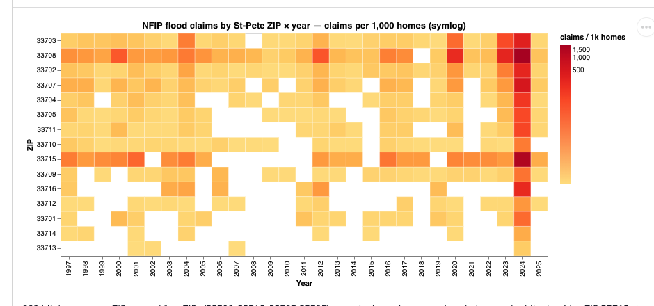

Doc BP-2026 · Field Notes on Research Intelligence
I build research intelligence systems — instruments for discovering what matters.
Scattered information becomes connected context.
Connected context becomes judgment.
02 — Curious, yet practical
Abstract
As a deeply curious-yet-practical person, I find great satisfaction in employing my skills to solve problems that actually need solutions. Being able to effectively communicate complex ideas means understanding what the other person needs to know, and being able to speak their language. This is a skill, maybe even an art, that I have intentionally cultivated throughout my life, and I hope you'll find it demonstrated in my portfolio projects and writing.
My portfolio consists of projects that I created because I needed them to exist:
- i.I built Noeron because I wanted to remove the friction between consuming scientific podcasts and validating the claims being made.
- ii.While shopping for a new house, I found the existing platforms didn't provide the data I needed to make an informed decision, so I conducted my own St. Pete property-risk analysis.
- iii.I ran the same open-data pipeline on the region's jobs numbers to see what the economy is built on — a Tampa Bay labor-market analysis.
03 — Plates I–V
Plate I · Fig. 2 — Parcel-level catastrophe model
Selected Work
- Plate I St. Pete Property-Risk Analysis A from-scratch flood catastrophe model. Sees what Zillow and Redfin can't. DuckDB · dbt · FastAPI · MapLibre
- Plate II Noeron Detects scientific claims in podcasts, validates them against the literature. Gemini 3 · Python · Next.js · Supabase
- Plate III Tampa Bay Labor-Market Analysis What the economy actually runs on — and why where people work isn't where they live. BLS OEWS · Census ACS · DuckDB · marimo
- Plate IV Morphic Extracts structural patterns from a 150+ paper corpus, routes them to specialist agents. Multi-agent · Pattern extraction
- Plate V Critical Minerals Intelligence Interactive mapping, automated news monitoring, HHI-based supply-chain risk scoring. Mapping · News monitoring · HHI

No figure on file
05 — Selected writing
References
-
[1]
The Case for Quantum Bioelectricity
How Decentralized Science Can Propel Emerging Fields2026
-
[2]
The DeSci Solution
Moving Beyond the Limitations of Traditional Science2026